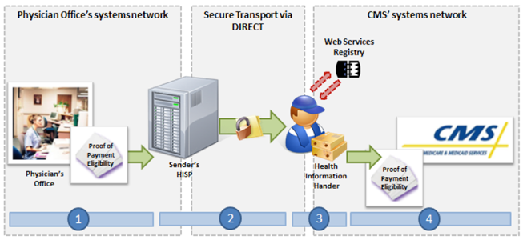

NwHIN 1.0 Portfolio > Scenarios > Submitting Documentation to CMS
Submitting Documentation to CMS
A physician’s office sends requested medical documentation to CMS:

A physician’s office receives a notice via fax or mail from the Centers for Medicare and Medicaid Services (CMS) requesting documentation proving payment eligibility. Instead of replying to CMS by fax or mail, a representative from the physician’s office electronically sends all relevant documentation to CMS through a Health Information Handler (HIH).
 |
Meaningful Use Stage 2 Objectives related to submitting documentation to CMS: N/A in MU Stages 1 and 2
CMS |
Common workflow steps for this scenario:
 |
After receiving either a mailed or faxed request for documentation to prove payment eligibility, a member of the physician office’s staff scans the relevant documents into a consolidated PDF file and authors a Direct message. | |
 |
When the staff member sends the message, it passes through the physician office’s Health Information Service Provider (HISP), a contracted brokering agent responsible for the management of security and transport for directed exchange. As it passes through the HISP, the message is encrypted using the x.509 Certificate associated with the Health Information Handler (HIH), and is delivered to the HIH’s Direct address in accordance with the Applicability Statement for Secure Health Transport. | |
 |
The HIH extracts the contents of the Direct message, and uses one of its utilities to package the PDF file into HITSP C62 format. | |
 |
After identifying the appropriate CMS web service endpoint, which is regularly validated in the Web Services Registry using the Web Services Registry Web Service Interface Specification, the HIH submits the package to CMS using a message that complies with esMD XDR Specification. |
NwHIN 1.0 specifications and resources recommended for scenario:
Content StructureGuidance that specifies how to structure health information to ensure proper exchange |
|
Transport and SecurityMechanisms and processes that safely exchange health information over the Internet |